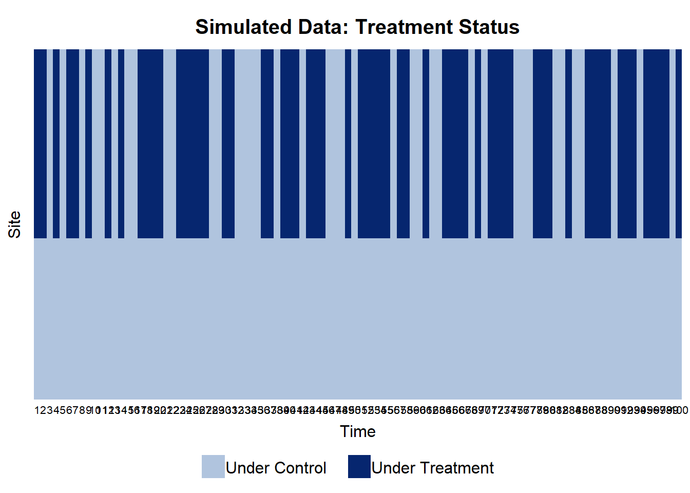

flowchart LR
H[H] --> S[S]
T[T] --> P[P]
S --> D[D]
P --> D
H --> Y[Y]
T --> Y
D --> Y
SPIDER: A Unified Framework for Policy-relevant Causal Research in the Social Sciences
Abstract
0.1 Keywords:
1 Introduction
We propose the SPIDER framework for policy-relevant causal research in the social sciences. The framework organises causal research design into six interrelated modules — Super-population, Parameters, Identification, Data, Estimation, and infeRence — and makes explicit the assumptions that are routinely left implicit in current practice. This contribution aims to strengthen causal research across the social sciences.
Existing guidance on causal research focuses narrowly on specific methods (e.g., Difference-in-Differences, Instrumental Variables) and leaves researchers to choose their approach based on data availability. This inevitably produces fragmented evidence, since different methods target different population parameters. SPIDER offers a more proactive approach. It enables researchers to define the target population and parameters based on their policy question, and guides them to construct an appropriate empirical strategy.
2 Setup
We introduce the primitives of the SPIDER framework. Section 2.1 outlines the indexing system used, and Section 2.2 introduces the variables considered by the framework. This section is deliberately informal, helping readers understand the building blocks and context. The probability-theoretic foundations are deferred to the next sections.
2.1 Indices
Let \(i\) denote an individual unit of analysis — for example, a neighbourhood, a transit stop, a person, or a household. Let \(t\) denote discrete time, common across all units. The time unit may represent days, weeks, or months depending on the application.
Let \(k \in \{1, \ldots, K\}\) index the outcome variables of interest. For example, in a study of low-traffic neighbourhoods (LTNs), \(k = 1\) may index neighbourhood internal traffic volume, \(k = 2\) boundary road traffic volume, and \(k = 3\) air pollution levels.
2.2 Variables
Let \(S_i \in \mathcal{S}=\{s_0, s_1, \ldots, s_m\}\) denote the treatment scheme assigned to unit \(i\). The baseline scheme \(s_0\) corresponds to no treatment; \(s_1, \ldots, s_m\) correspond to \(m\) different treatment arms. Each unit is assigned to exactly one scheme, and assignment is time-invariant.
Let \(P_t \in \mathcal{P} = \{p_0, p_1\}\) denote the implementation status of the treatment at time \(t\). The baseline status \(p_0\) corresponds to non-implementation; \(p_1\) corresponds to implementation. Implementation status is common to all units at time \(t\).
Let \(D_{i,t} \in \mathcal{D} = \{d_0, d_1, \ldots, d_M\}\) denote the treatment status of unit \(i\) at time \(t\). The baseline status \(d_0\) denotes the absence of treatment – either because the unit is assigned to the baseline scheme \(s_0\), or the treatment is not implemented \(p_0\). Other statuses \(d_1, \ldots, d_M\) denote the presence of treatment under schemes \(s_1, \ldots, s_M\), respectively.
Let \(Y^k_{i,t}(d) \in \mathbb{R}\) denote the \(k\)-th potential outcome of interest for unit \(i\) at time \(t\) under treatment status \(D_{i,t} = d\).
Let \(H_i \in \mathcal{H}\) denote a vector of time-invariant characteristics of unit \(i\), such as population density, land use mix, and proximity to public transport.
Let \(T_t \in \mathcal{T}\) denote a vector of time-varying aggregate variables common to all units at time \(t\), such as oil prices and day-of-week.
2.3 Dependency structure
The treatment status \(D_{i,t}\) is determined by the treatment scheme \(S_i\) and the implementation status \(P_t\), formalised as follows:
\[ D_{i,t} = \begin{cases} d_0 & \text{if } S_i = s_0 \text{ or } P_t = p_0, \\ d_m & \text{otherwise} \end{cases} \]
The potential outcomes \(Y^k_{i,t}(d_m)\), for all \(k\) and \(m\), are dependent on the unit’s characteristics \(H_i\), time dependent aggregate variables \(T_t\), and their realised values in the previous time period \(Y^k_{i,t-1}(d_m)\). The exact functional form of this dependence is left unspecified, allowing for a wide range of dynamic and heterogeneous effects.
The overall dependency structure is summarised in the following directed acyclic graph (DAG):
3 Super-population
The super-population is a hypothetical data-generating process that produces all potential observations. It therefore provides the basis for cross-study comparability and extrapolating empirical results to future interventions. Two empirical studies are meaningfully comparable only if their data are generated by the same underlying process. Similarly, predicting the effects of future interventions requires that the underlying process remains stable.
Formally, SPIDER models the super-population as an infinite stochastic process, \[ \{H_i, S_i, T_t, P_t, Y^1_{i,t}(d_0), \ldots, Y^1_{i,t}(d_M), \ldots, Y^K_{i,t}(d_0), \ldots, Y^K_{i,t}(d_M) \}_{i \geq 1, t \geq 1} \] with a well-defined joint distribution over these infinite sequences of random variables. Learning the parameters of this distribution is the ultimate goal of empirical work.
A draw from this distribution is an infinite panel — one with unboundedly many units and time periods. Empirical data are however always finite. We conceptualise any dataset as a finite window into this infinite panel. The probability of observing a particular dataset is therefore the marginal probability that the corresponding panel entries take the observed values. To fix ideas, consider a study that observes \(N\) neighbourhoods over \(L\) years. This dataset is a finite window into the infinite panel. Inferential work on the super-population, based on this dataset, proceeds from the marginal distribution of the corresponding random variables: \(H_1, \ldots, H_N\), \(T_1, \ldots, T_L\) and so forth.
This construction licenses flexible cross-study comparisons and extrapolation. Two datasets of different sample sizes can be viewed as two finite windows into the same draw or different draws from the super-population. Empirical results from these two datasets remain meaningfully comparable, because they target the same super-population. Findings can also be extrapolated to future interventions provided the underlying super-population is stable.
To make the super-population tractable for further analytical work and empirical applications, we impose two structural assumptions. Firstly, we assume that the sequence of unit characteristics and treatment schemes \(\{H_i, S_i\}_{i \geq 1}\) is independent of the sequence of time characteristics and implementation status \(\{T_t, P_t\}_{t \geq 1}\). Dependencies within each sequence are permitted, i.e., \(S_i\) may be correlated with \(H_i\) or \(S_{i+1}\). For example, in a LTN study, a neighbourhood’s assigned treatment scheme (\(S_i\)) may depend on the number of traffic lights on its boundary roads (\(H_i\)). Neighbourhoods with more traffic lights may experience greater rat-running and therefore be assigned to a more intensive filtering scheme.
Secondly, we permit potential outcomes \(Y^k_{i,t}(d_m)\), for all \(k,m\), to depend on the unit characteristics \(H_i\) and time characteristics \(T_t\). Fixing \(k, i, t\), potential outcomes are correlated with one another only through this shared dependence on \(H_i\) and \(T_t\). However, fixing \(m,i,t\), we additionally permit dependencies between potential outcomes of different types \(k\) that are not captured by \(H_i\) and \(T_t\). For example, in an LTN study, the air pollution levels (\(k=2\)) is dependent on traffic volume (\(k=1\)) even after conditioning on unit and time characteristics. In other words, holding unit and time characteristics fixed, increasing internal traffic volume may still increase air pollution levels.
Together, these assumptions prevent the model from becoming intractable by ruling out unrestricted mutual dependence (i.e., everything depends on everything). Nonetheless, they still leave a wide range of dependency structures open for applied researchers to specify based on their substantive knowledge of the system under study.
3.1 Running example
To make the discussion concrete, we make use of a running example throughout the paper. In this example, the super-population consists of three time-invariant variables (\(H^{1}_{i}, H^{2}_{i}, H^{3}_{i}\)) and three unit-invariant variables (\(T^{1}_{t}, T^{2}_{t}, T^{3}_t\)). Their distributions are given in Table 1.
| Variables | Marginal Distribution |
|---|---|
| \(H^{1}_{i}, H^{2}_{i}, H^{3}_{i}\) | Bernoulli (0.5) |
| \(T^{1}_{t}, T^{2}_{t}\) | Bernoulli (0.5) |
| \(T^{3}_t\) | Bernoulli (\(\pi_t\)), where \(\pi_t = \Phi\left(0.01*(t-1)\right)\) 1 |
To keep the example simple and illustrative, all the independent variables are binary. The means of \(H^1_i, H^2_i, H^3_i, T^1_t, T^2_t\) are all fixed at 0.5. The mean of \(T^3_t\) increases over time, starting from 0.5 at \(t=1\) and approaching 1 as \(t\) increases.
The treatment scheme \(S_i\), implementation status \(P_t\) are binary variables, and potential outcomes \(Y^1_{i,t}(d_0), Y^1_{i,t}(d_1)\) are given by: \[ \begin{aligned} S_{i} &= \mathbb{1}\{-0.1*H^1_i + 0.2*H^2_i + \epsilon > 0\} \\ P_{t} &= \mathbb{1}\{-0.1*T^1_t + 0.2*T^2_t + \epsilon > 0\} \\ Y^1_{i,t}(d_0) &= 1 - 0.1*H^1_i + 0.3*H^3_i - 0.1*T^1_t + 0.3*T^3_t + \epsilon \\ Y^1_{i,t}(d_1) &= 0 - 0.1*H^1_i + 0.3*H^3_i - 0.1*T^1_t + 0.3*T^3_t + \epsilon \end{aligned} \] where \(\epsilon\) is a standard normal error term.
4 Parameters
The most poicy-relevant causal parameters are the (1) average treatment effects (ATEs) (2) average treatment effects on the treated (ATTs). They are formally defined as follows.
5 Identification
6 Data
6.1 Example
6.1.1 Simulate unit-dependent variables
Code
# generate ids
df.id.unit = genIds(dim1.size = 100, dim1.name = "unit")
# H1, H2, H3
cfg = defaultVarCfg(3)
cfg$var1$name = "H1" # affect S
cfg$var2$name = "H2" # affect Y
cfg$var3$name = "H3" # confounder: affect both S,Y
cfg$var1$lvar$mean = rlang::quo(0)
cfg$var2$lvar$mean = rlang::quo(0)
cfg$var3$lvar$mean = rlang::quo(0)
cfg$var1$lvar$sd = rlang::quo(1)
cfg$var2$lvar$sd = rlang::quo(1)
cfg$var3$lvar$sd = rlang::quo(1)
cfg$var1$lvar$link = "probit"
cfg$var2$lvar$link = "probit"
cfg$var3$lvar$link = "probit"
df.ivar.det = genLvarDet(df.id.unit, config = cfg)
df.ivar.sto = simLvarSto(df.id.unit, config = cfg)
df.ivar = genVars(df.ivar.det, df.ivar.sto, config = cfg)
# S
cfg = defaultVarCfg(1)
cfg$var1$name = "S"
cfg$var1$lvar$mean = rlang::quo( (-0.1)*H1 + (0.2)*H2 )
cfg$var1$lvar$sd = rlang::quo(1)
cfg$var1$lvar$link = "probit"
df.dvar.det = genLvarDet(df.id.unit, config = cfg, ivar = df.ivar)
df.dvar.sto = simLvarSto(df.id.unit, config = cfg)
df.dvar = genVars(df.dvar.det, df.dvar.sto, config = cfg)
# Final
df.var.site = df.ivar %>% left_join(df.dvar)Joining with `by = join_by(unit)`Code
# Check
summariseSim(df.var.site) H1 H2 H3 S
0.55 0.56 0.49 0.54
H1 H2 H3 S
0.5 0.5 0.5 0.5
H1 H2 H3 S
H1 1.00 0.13 0.00 0.05
H2 0.13 1.00 0.14 0.03
H3 0.00 0.14 1.00 -0.06
S 0.05 0.03 -0.06 1.006.1.2 Simulate time-dependent variables
Code
# generate ids
df.id.time = genIds(dim1.size = 100, dim1.name = "time")
# T1, T2, T3
cfg = defaultVarCfg(3)
cfg$var1$name = "T1"
cfg$var2$name = "T2"
cfg$var3$name = "T3"
cfg$var1$lvar$mean = rlang::quo(0)
cfg$var2$lvar$mean = rlang::quo(time*0.01)
cfg$var3$lvar$mean = rlang::quo(0)
cfg$var1$lvar$sd = rlang::quo(1)
cfg$var2$lvar$sd = rlang::quo(1)
cfg$var3$lvar$sd = rlang::quo(1)
cfg$var1$lvar$link = "probit"
cfg$var2$lvar$link = "probit"
cfg$var3$lvar$link = "probit"
df.ivar.det = genLvarDet(df.id.time, config = cfg)
df.ivar.sto = simLvarSto(df.id.time, config = cfg)
df.ivar = genVars(df.ivar.det, df.ivar.sto, config = cfg)
# P
cfg = defaultVarCfg(1)
cfg$var1$name = "P"
cfg$var1$lvar$mean = rlang::quo( (-0.1)*T1 + (0.2)*T2 )
cfg$var1$lvar$sd = rlang::quo(1)
cfg$var1$lvar$link = "probit"
df.dvar.det = genLvarDet(df.id.time, config = cfg, ivar = df.ivar)
df.dvar.sto = simLvarSto(df.id.time, config = cfg)
df.dvar = genVars(df.dvar.det, df.dvar.sto, config = cfg, ret_latent = TRUE)
# Final
df.var.time = df.ivar %>% left_join(df.dvar$final)Joining with `by = join_by(time)`Code
# Check
summariseSim(df.var.time, exclude_cols = c("unit")) time T1 T2 T3 P
50.50 0.42 0.78 0.47 0.61
time T1 T2 T3 P
29.01 0.50 0.42 0.50 0.49
time T1 T2 T3 P
time 1.00 0.00 0.16 0.02 0.07
T1 0.00 1.00 0.06 -0.07 0.06
T2 0.16 0.06 1.00 -0.08 0.02
T3 0.02 -0.07 -0.08 1.00 -0.07
P 0.07 0.06 0.02 -0.07 1.006.1.3 Generate treatment status
Code
# generate ids
df.ids = genIds(df.id.unit, df.id.time)
# create treatment status D
df.treatStatus = df.ids %>%
left_join(df.var.site) %>%
left_join(df.var.time) %>%
mutate(D = if_else(S == 1 & P == 1, 1, 0))Joining with `by = join_by(unit)`
Joining with `by = join_by(time)`Code
# plot panel
library(panelView)## See https://yiqingxu.org/packages/panelview/ for more info.
## Report bugs -> yiqingxu@stanford.edu.Code
# create a dummy Y
# df.treatStatus = df.treatStatus %>% mutate(Y = 1)
panelview(1 ~ D, data = df.treatStatus, index = c("unit","time"),
axis.lab = "time", xlab = "Time", ylab = "Site",
gridOff = TRUE, by.timing = TRUE,
background = "white", main = "Simulated Data: Treatment Status")
6.1.4 Simulate potential outcomes
Code
# Y1_0, Y1_1
cfg = defaultVarCfg(2)
cfg$var1$name = "Y1_0"
cfg$var2$name = "Y1_1"
cfg$var1$lvar$mean = rlang::quo(1 + (-0.1)*H1 + (0.3)*H3 + (-0.1)*T1 + (0.3)*T3)
cfg$var2$lvar$mean = rlang::quo(0 + (-0.1)*H1 + (0.3)*H3 + (-0.1)*T1 + (0.3)*T3)
cfg$var1$lvar$sd = rlang::quo(1)
cfg$var2$lvar$sd = rlang::quo(1)
df.dvar.det = genLvarDet(df.ids, config = cfg, ivar = df.treatStatus)
df.dvar.sto = simLvarSto(df.ids, config = cfg)
df.dvar = genVars(df.dvar.det, df.dvar.sto, config = cfg)
# Final
df.outcomes = df.treatStatus %>% left_join(df.dvar)Joining with `by = join_by(unit, time)`Code
# Check
summariseSim(df.outcomes) H1 H2 H3 S T1 T2 T3 P D Y1_0 Y1_1
0.55 0.56 0.49 0.54 0.42 0.78 0.47 0.61 0.33 1.18 0.18
H1 H2 H3 S T1 T2 T3 P D Y1_0 Y1_1
0.50 0.50 0.50 0.50 0.49 0.41 0.50 0.49 0.47 1.02 1.03
H1 H2 H3 S T1 T2 T3 P D Y1_0 Y1_1
H1 1.00 0.13 0.00 0.05 0.00 0.00 0.00 0.00 0.03 -0.05 -0.05
H2 0.13 1.00 0.14 0.03 0.00 0.00 0.00 0.00 0.02 0.00 0.02
H3 0.00 0.14 1.00 -0.06 0.00 0.00 0.00 0.00 -0.04 0.14 0.15
S 0.05 0.03 -0.06 1.00 0.00 0.00 0.00 0.00 0.65 -0.01 0.00
T1 0.00 0.00 0.00 0.00 1.00 0.06 -0.07 0.06 0.03 -0.06 -0.06
T2 0.00 0.00 0.00 0.00 0.06 1.00 -0.08 0.02 0.01 -0.03 0.00
T3 0.00 0.00 0.00 0.00 -0.07 -0.08 1.00 -0.07 -0.04 0.14 0.15
P 0.00 0.00 0.00 0.00 0.06 0.02 -0.07 1.00 0.56 0.00 -0.02
D 0.03 0.02 -0.04 0.65 0.03 0.01 -0.04 0.56 1.00 -0.01 -0.02
Y1_0 -0.05 0.00 0.14 -0.01 -0.06 -0.03 0.14 0.00 -0.01 1.00 0.05
Y1_1 -0.05 0.02 0.15 0.00 -0.06 0.00 0.15 -0.02 -0.02 0.05 1.007 Estimation
8 Inference
9 Conclusion
References
Footnotes
\(\Phi(\cdot)\) denotes the standard normal cumulative distribution function.↩︎